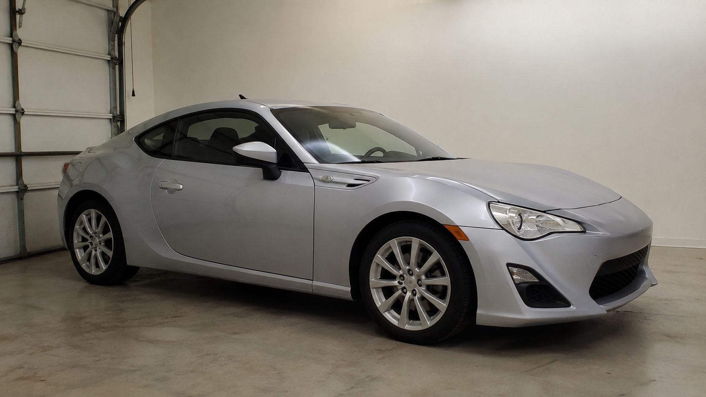

Swift Shark Home
Welcome to Swift Shark
Swift Shark is a custom car modification garage built for drivers who want their vehicles to look cleaner, sound better, and feel more personal without turning them into unreliable project cars.
The shop focuses on street-friendly upgrades for daily drivers, weekend builds, and first-time car enthusiasts. From wheels and tint to lighting, wraps, suspension, and interior details, Swift Shark helps cars stand out while still staying practical.
Before and After Build Viewer
Use the buttons below to compare how a vehicle can change after a Swift Shark appearance package. This feature shows how small upgrades can make a car feel sharper and more complete.
The viewer is also one of the interactive JavaScript features included for the final project. It changes the image and caption without opening a new page.
